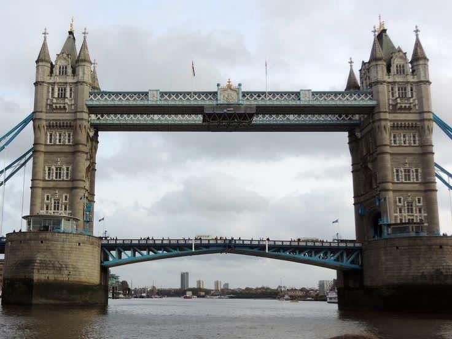
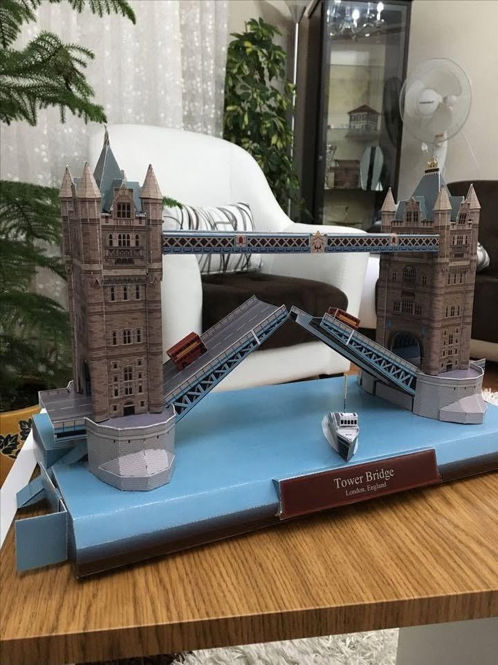
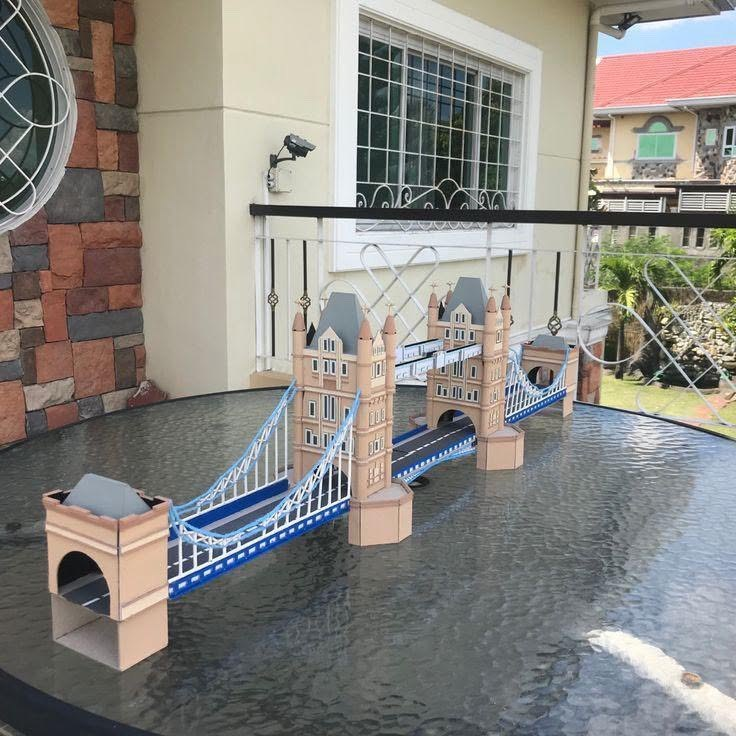
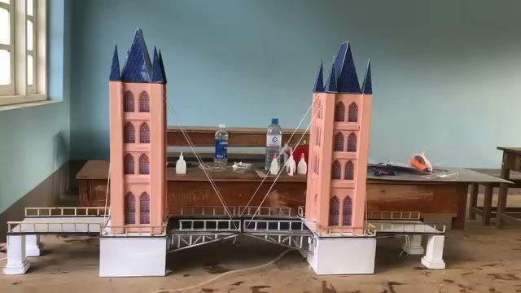

El proyecto
Qué es un puente basculante
Es un puente cuyo tablero se levanta para dejar pasar barcos y vuelve a bajar para el tránsito de vehículos. El de este proyecto se mueve con un sistema hidráulico.
El Principio de Pascal
La presión que se aplica a un fluido incompresible encerrado se transmite con la misma intensidad en todas las direcciones. Por eso, un pistón pequeño que empuja el fluido puede generar una fuerza mucho mayor en un cilindro de área más grande.
F₁ / A₁ = F₂ / A₂
Cómo se mueve el puente
- Un motor acciona la bomba, que impulsa el aceite desde el depósito.
- La válvula distribuidora dirige el aceite hacia los cilindros hidráulicos.
- Los cilindros se extienden y levantan cada mitad del tablero sobre su articulación.
- Al invertir el flujo del aceite, los cilindros se retraen y el tablero baja.

Nuestro prototipo
Construimos la maqueta con materiales accesibles: palitos de madera, cartón, papel e icopor.


Referencias e inspiración
Nos inspiramos en puentes basculantes reales y en maquetas de otros estudiantes y aficionados.



